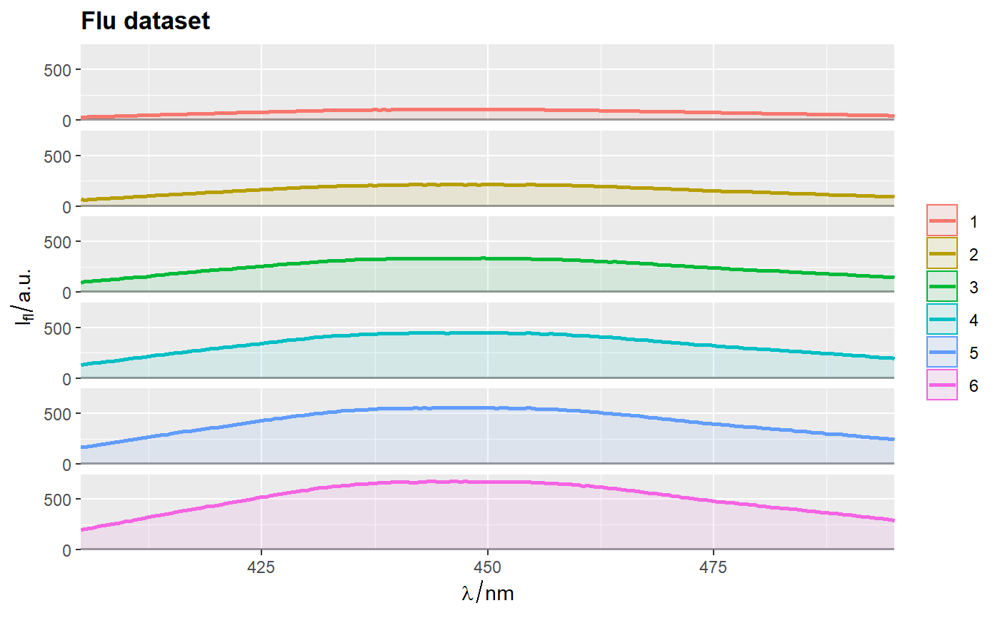
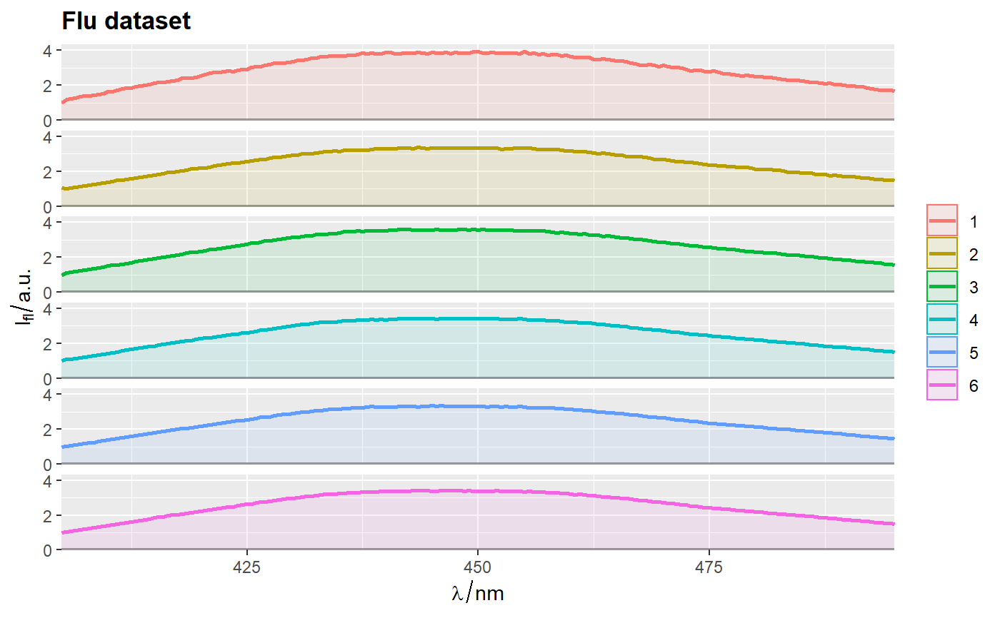
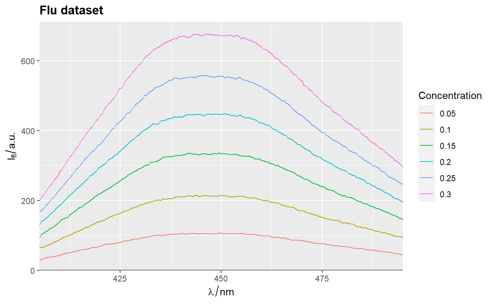
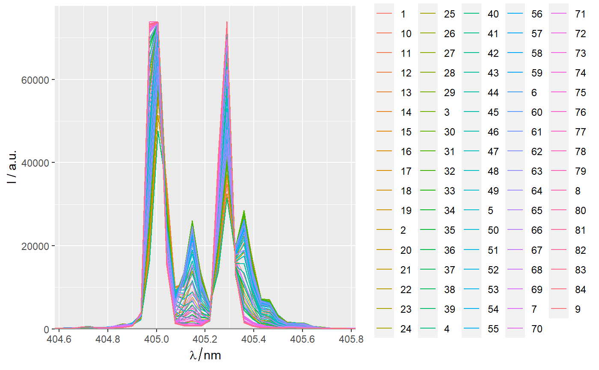

[!!!] Plot spectroscopic curves
qplot_spc.RdPlot spectroscopic curves in different colors.
[ DESCRIPTION MUST BE UPDATED ]
qplot_spc( sp, Title = "Components", xLabel = labels(sp, ".wavelength"), yLabel = labels(sp, "spc"), by = "cNames", palette = hyGet_palette(sp), legendName = FALSE, filled = TRUE, normalize = FALSE, facets = FALSE, subTitle = NULL, names.in = NULL, line_size = 1, add = FALSE, ... ) gg_spc(sp, by = "cNames", line_size = 1, ...)
Arguments
| sp |
|
|---|---|
| Title | The main title for the plot. |
| xLabel | A label for abscisa (x) axis. |
| yLabel | A label for ordinate (y) axis. |
| by | A name of variable in |
| legendName | A name of a legend. Possible entries:
|
| filled | Logical. If |
| normalize | A flag that indicates whether components should be normalized before plotting. Possible selections:
|
| facets | A logical flag. If |
| subTitle | The second line of title, which will be smaller and and in italics. |
| names.in | DEPRECATED. Use |
| ... | further arguments to geom_line. |
Value
A ggplot object.
More details in package ggplot2.
Details
qplot_kSp plots spectra on one graph.
qplot_kSpFacets plots spectra on separate graphs (facets).
Note
Before using as an argument sp,
a matrix of components/loadings (sp) must be treated
with function decomposition (or equivalent)
which converts it to hyperSpec object.
See also
Other spHelper plots:
check_palette(),
layer_spRangeMean(),
plot_colors(),
plot_hyPalette(),
plot_spCompare(),
plot_spDiff(),
plot_spDistribution(),
qplot_confusion(),
qplot_crosstab(),
qplot_infoDim(),
qplot_kAmp(),
qplot_kSp(),
qplot_prediction(),
qplot_spRangeCenter(),
qplot_spRangeMedian(),
qplot_spStat(),
rmExpr(),
rm_stripes(),
stat_chull()
Other component analysis / factorisation related functions in spHelper:
getScores(),
infoDim(),
plot_spDiff(),
qplot_infoDim(),
qplot_kAmp(),
qplot_kSp(),
reconstructSp(),
sortLoadings(),
unipeak(),
whichOutlier()
Examples
library(spHepler)#> Error in library(spHepler): there is no package called 'spHepler'library(spPlot) ggplot() + qplot_spc(sp, by = "gr", add = TRUE, alpha = .2) + qplot_spStat(sp,"gr", mean, add = TRUE)#> Error in hyGet_palette0(sp): object 'sp' not foundqplot_kSp(Loadings2)## Remove fill ----------------------------------------------------------------- qplot_kSp(flu, filled = FALSE)qplot_sp(flu)## Name of a legend ------------------------------------------------------------ flu$c2 <- as.factor(flu$c) qplot_sp(flu, Title = "Flu dataset", by = 'c2', legendName = FALSE)